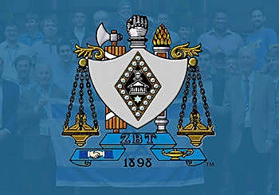

A smaller community within Rutgers
Brothers see one another throughout the week, not only at chapter events. The house, campus and shared routines create regular opportunities to connect.

Established at Rutgers in 1948
Beta Delta is a student-led chapter where membership means building friendships, taking responsibility and contributing to something that will continue after graduation.
Our Chapter
Beta Delta is a student-led organization. That means the quality of the chapter depends on brothers who are willing to contribute their time, judgment and effort. Members do not simply attend events; they help create the experience for everyone around them.
For some brothers, that responsibility begins in recruitment. Others take ownership of finances, communications, housing, philanthropy or member programming. The chapter gives students the chance to make decisions, work through disagreements and see the consequences of good planning.
Outside of formal leadership, the experience is personal. Brothers share classes, internships, meals, trips and major milestones. The chapter provides a consistent group of people on a large campus, while still encouraging members to build their own academic, professional and extracurricular lives.

Academics & Careers
Brothers regularly help one another choose classes, prepare for interviews, improve résumés and navigate internships. That support does not replace individual responsibility, but it gives members a network of people who understand what they are working toward.
In Spring 2026, 47 brothers earned Dean’s List recognition and 13 finished with a 4.0 GPA. Those results reflect individual effort, but they also show the kind of academic culture the chapter wants to protect.
Meet the Chapter LeadershipThe Experience
Membership combines friendship with responsibility. The most meaningful parts often come from doing both at the same time.
Brothers see one another throughout the week, not only at chapter events. The house, campus and shared routines create regular opportunities to connect.
Budgets, recruitment decisions, event planning and housing issues require careful judgment. Members learn because the chapter depends on them.
Alumni return for events, mentor younger brothers and remain connected through careers, families and the shared history of Beta Delta.

National Fraternity
Zeta Beta Tau was founded nationally in 1898. Beta Delta carries that history at Rutgers while developing its own traditions, leadership structure and alumni community.
The national fraternity provides standards, resources and a broader network. The chapter’s work remains local and personal: current brothers are responsible for representing ZBT well on campus and building a chapter future members will be proud to inherit.
In 2025, ZBT International recognized Beta Delta with the Edwin B. Meissner Award for Most Improved Chapter, marking a period of growth that continued through record recruitment in 2026 and the establishment of 106 College Avenue.
Visit ZBT InternationalNext